Province de la Tshuapa · Antennes Boende & Bokungu · Période Janvier – Mars 2026
Deux rapports PowerPoint générés automatiquement à partir des exports ODK/Kobo des checklists de supervision PEV et du formulaire de contrôle qualité des données. Graphiques épurés (sans quadrillage), KPI et commentaires d'expert PEV actualisés à chaque période.
Couverture, scores par ZS, 6 composantes, chaîne du froid, monitorage, concordances PENTA3/RR2, erreurs de transcription, goulots et actions correctrices.
Scoring de la checklist, performance par composante, prestation, récupération des enfants manqués, surveillance, concordance DHIS2/Registre et score qualité.
À ce jour, le contrôle qualité ne compte qu'une soumission par niveau (ZS Bokungu ; AS Lofima 2) : les indicateurs réels de ces unités sont affichés tels quels, les autres ZS/CS portent des valeurs représentatives en attendant l'extension de la couverture. Les rapports se rempliront automatiquement au fil des nouveaux contrôles.